My Guitars 06
入手した順に載せている。2024～2025年。
- Unknown Blender ST Type - 3 Tone Sunburst (売却済)
- Yamaha SG-2500 - Red Sunburst
- Gibson Custom Shop Japan Limited Run 1960 Les Paul Standard Reissue Murphy Lab Ultra Light Aged - Faded Cherry Ice Tea
- HeartMan ST Type - Black
- Fender American Standard Stratocaster - 3TS (売却済)
- Fender Japan TLR52-NLS - Natural
- Fender Mexico Player II Stratocaster - 3TS (売却済)
- Suhr Modern Carve Top Limited Edition 2009 - Faded Trans Whale Blue Burst
- Squier 51 - Vintage Blonde 3本目
- Fernandes FST Mod - 3TS
- ← My Guitars 05 : 41～50本目
- → My Guitars 07 : 61～本目
Unknown Blender ST Type - 3 Tone Sunburst (売却済)
- 購入日 : 2024-11-11
- 購入価格 : ￥41,000
- カラー : 3TS
- 指板 : メイプル・22F
ヤフオクで購入、2024-11-14 到着。ノーブランドで、ヤフオク出品者による改造品のストラトだが、面白い機能が付いているので購入してみた。
「ブレンダー」と呼ばれる回路を搭載しており、ストラトの外見はそのままに、1ボリューム・1トーン・ブレンダースイッチとなっている。ブレンダーのトーンを 0 にすると通常のストラトと同じ配線で、トーンを開放していくと2つのピックアップが直列になり疑似的なハムバッカーサウンドになる。トーン 10 にすると、フロントポジションではフロント + センターの疑似ハム、リアポジションではセンター + リアの疑似ハムになるというワケだ。このブレンダー回路により、ストラトながらハムノイズを軽減でき、若干音量と音圧が上がるので、使い勝手が良い。
22F のメイプルネックで、ボディ材は不明だが Fender Japan ST68RH と同じくずっしりと重たいので、アルダーボディだったりするのかな。3トーンサンバーストも綺麗。
2025-06-09、機材整理のため売却。
Yamaha SG-2500 - Red Sunburst
- 購入日 : 2025-04-02
- 購入価格 : ￥329,890
- カラー : RS (Red Sunburst)
- 指板 : エボニー・22F
セカンドストリート御茶ノ水店に行って試奏して購入。2本の SG-1000 (売却済) と SG-1000-24 を経由して、念願のスルーネック SG を手に入れた。それにしても凄い値段だな…。
1983～1985年の間にのみ生産されていたモデルで、当時の定価は18万。シリアルナンバーは「110072」で、コチラは1983年製のようである。SG-2000 との違いはというと、
- SG-2000 は太めのサスティーンプレート搭載、SG-2500 は細めのサスティーンプレート搭載
- SG-2000 は当時アルニコ V の OPG-1 ピックアップ搭載、SG-2500 はスピネックスピックアップ搭載
- SG-2000 は発売当初バイサウンドシステムなし、SG-2500 はバイサウンド搭載
- SG-2000 と比べて、SG-2500 の方がボディやネックの厚さが薄い
- SG-2000 と比べて、SG-2500 の方がブリッジとテールピースの間が狭い
…というあたりで、SG-2000 の上位機種という位置付けだったみたい。特にスピネックス PU は当初 SG-3000 に搭載されていたこともあり、そこで差別化していたようだが、結局後年になって SG-2000 にもスピネックスタイプのニュー・OPG-1 が搭載されるようになりバイサウンドも有効になったので、SG-2500 との差別化要素がなくなり終売した模様。
個人的にはサスティーンプレートの効きを楽しみにしていたのだが…まぁ、こんなもんか？という感じ。パワフルなピックアップで少々扱いづらいところもある。レスポールと比べるとハイポジションの弾きやすさがやはり抜群で、エボニー指板も高級感があって良い。全体的な状態も良さげなモノが手に入ったので、今後使いこなしていこうと思う。
Gibson Custom Shop Japan Limited Run 1960 Les Paul Standard Reissue Murphy Lab Ultra Light Aged - Faded Cherry Ice Tea
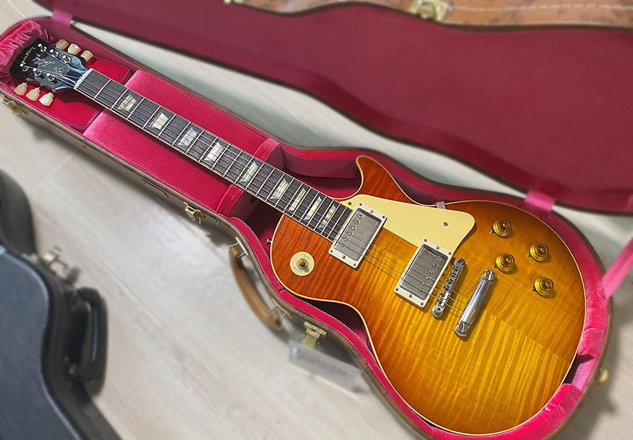 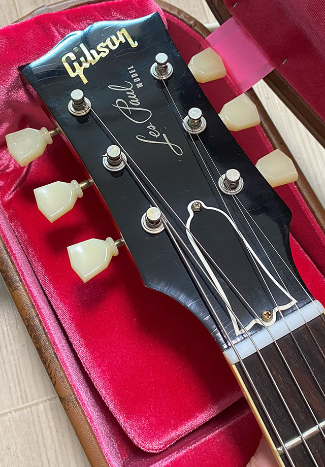 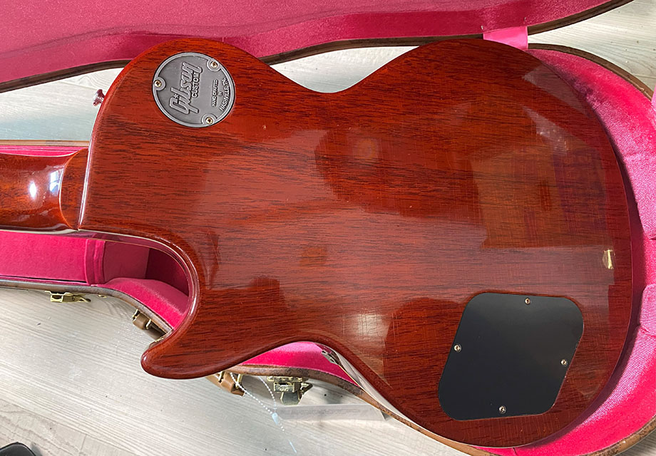 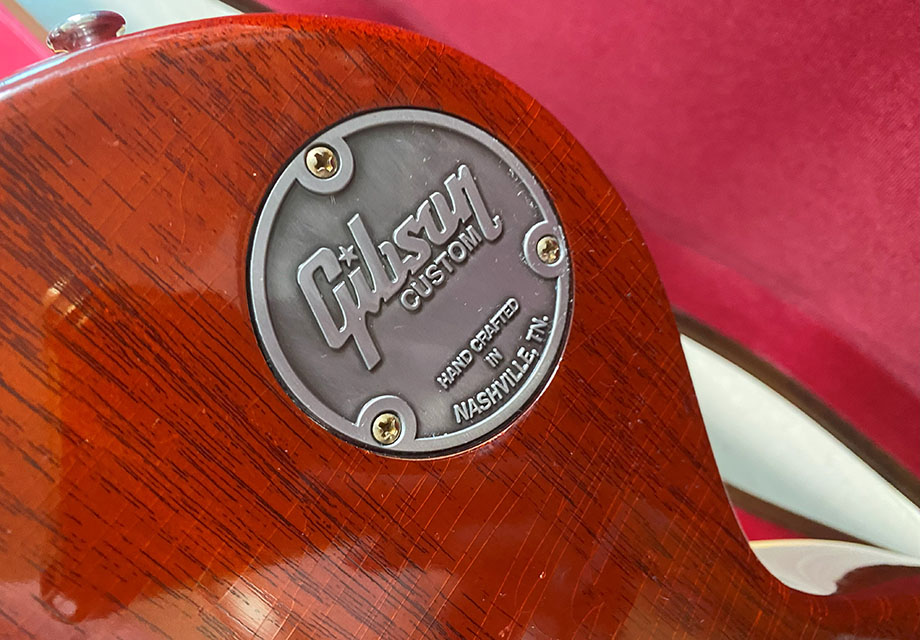 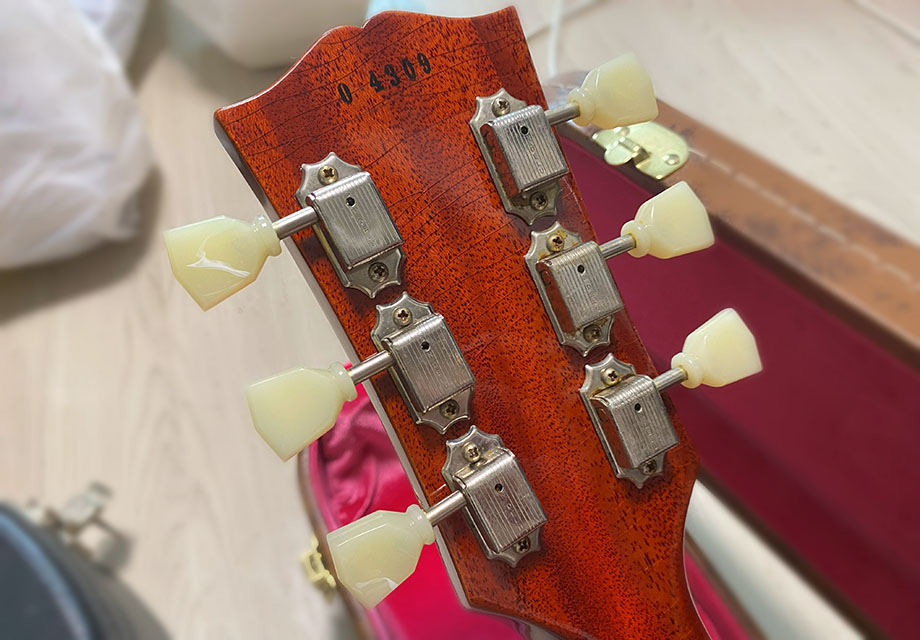 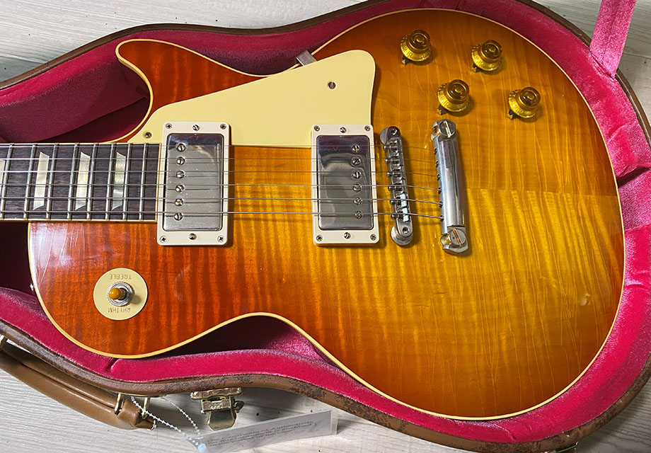 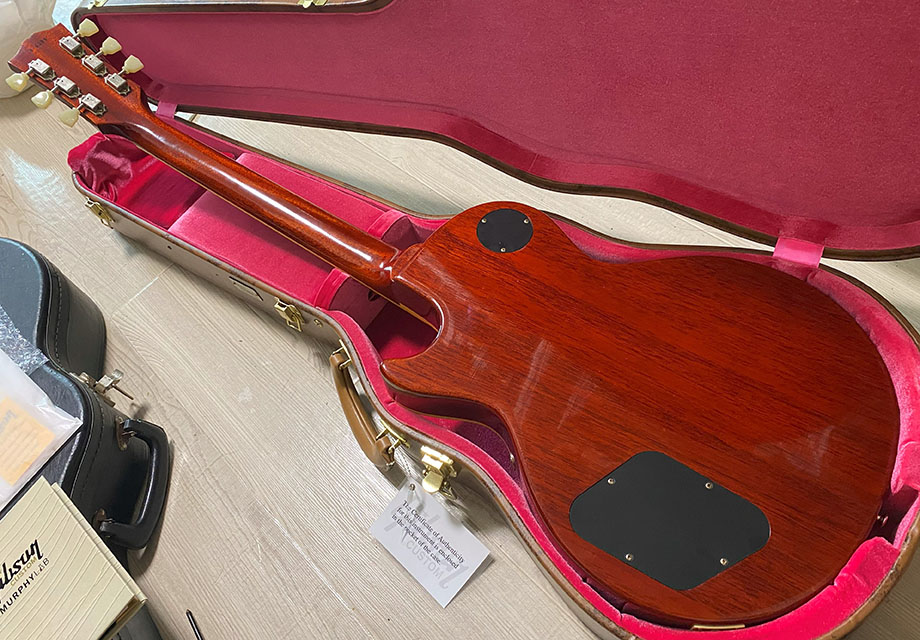 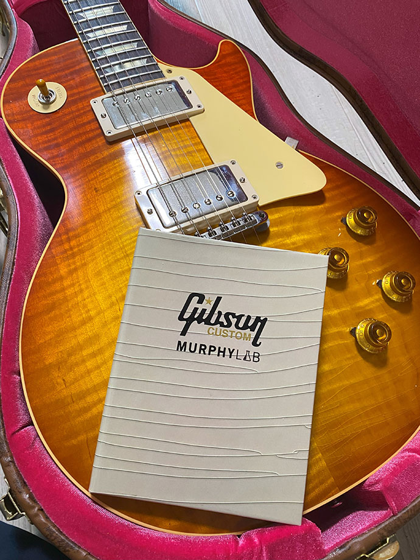 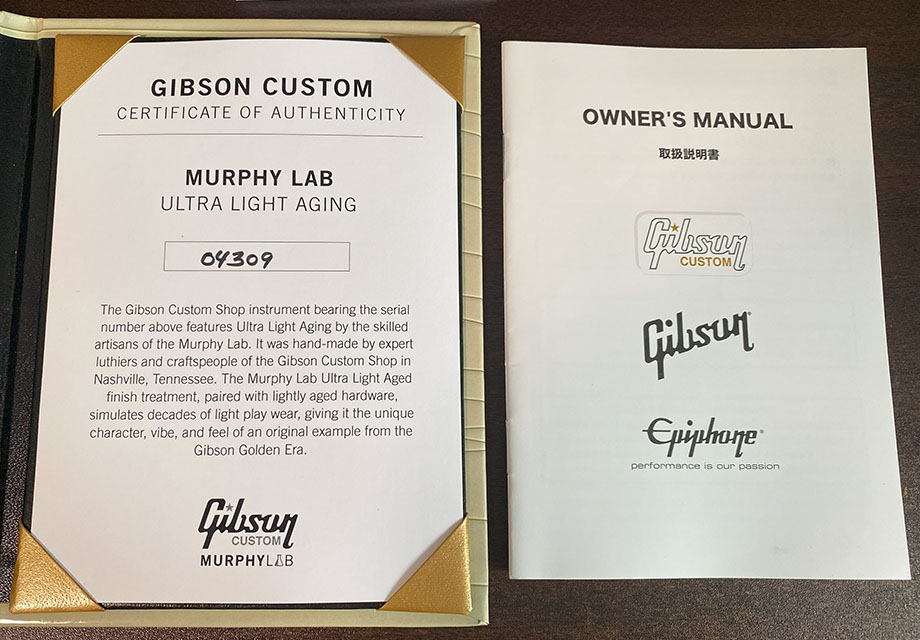 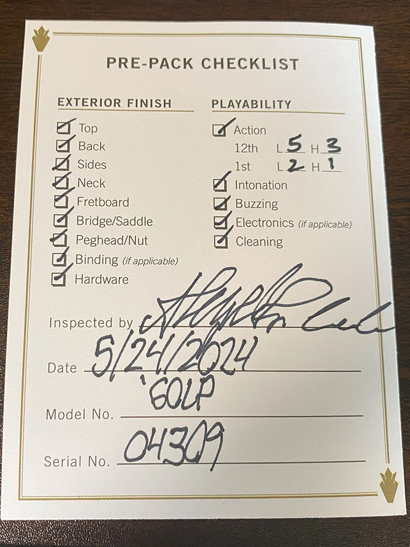
- 購入日 : 2025-04-06
- 購入価格 : ￥858,000
- カラー : Faded Cherry Ice Tea
- 指板 : ハカランダ・22F
いつかは欲しい欲しいと思っていたバースト・レスポール。ヤフオク、メルカリ、デジマート、J-Guitar に掲載されている文字どおり「全商品」を見尽くして、Qsic 神戸本店が出していたレスポールに絞って購入。85万もする商品を試奏もせずにネット通販とは…。
中古品ではあったが、2024年製の新品同等品。認定証なども付属していて所有欲が満たされる。シリアルは「0 4309」と、1960年製リイシュー (R0) である (2桁目の「4」で2024年製であることも分かる)。しかし1コブのクルーソンペグ、メタルプレートの付いていないハットノブが搭載されており、一見すると1959年製っぽくも見える。「V1」「V2」「V3」とある60リイシューの「V1」相当である (同シリーズ別個体の製品紹介ページでは「V2 ネック」と表記されていたが、いずれにせよ59ルック)。トラ杢のフレイムメイプルトップも59バーストっぽさがあり美しい。王道な59リイシューを選ぶよりもちょっとマニアックだし、Japan Limited Run という点もレア度が高くて気に入った。
アルニコ3を用いた「Custombucker」ピックアップのサウンドが最高である。コレを弾いた瞬間に、全てのギターが「過去のモノ」となった。完全にコレだけで良い。全てがちょうど良い。申し分ない。完璧な音がする。そう思った。具体的には倍音成分が豊かで、ニュアンスをしっかり捉えた単音が出せつつ、和音を弾いた時の音の分離感が素晴らしい。ハムバッカーにありがちな低音のモコモコ感がなく、カラッとしたサウンドで気持ちが良い。本当にケチの付け所がなくてビックリした。
あまりにも良かったので、別途カスタムバッカーの中古品を購入して Epiphone LPS-80 に搭載してみたが、サウンドの傾向は近付いたものの、Epiphone と Gibson とで歴然とした差がある…。ネックの太さの違いなのか、ラッカー塗装・ポリ塗装の違いなのか、コンデンサの違いなのか、とにかく Gibson の方が「まさにコレだ！！」と感じる、抜けの良いサウンドになっている。やっぱり「ホンモノ」は違うんやね…。
個人的にはこのギターをもって、「ギター・ジャーニー」の終着点に到達した気分。1本だけ残して他のギターを手放せ、と言われたら、迷いなくコレ1本を残すと答えられる、そんな完璧な1本が手に入ったと思っている。
HeartMan ST Type - Black
- 購入日 : 2025-04-11
- 購入価格 : ￥5,250
- カラー : 黒
- 指板 : ローズウッド・24F
24フレット搭載かつ、舟型ジャックプレート搭載のストラトにフェチを感じるワタクシ。そのスペックを満たす Bacchus HST-24HSH というギターを持っているが、コチラはフロイドローズタイプで弦交換が若干ダルかった。そんな時にヤフオクで見つけたのが、コチラの HeartMan なるブランドのストラト。アームは欠品だったがシンクロナイズドトレモロ機構で、5,250円と格安で出品されていたのでポチる。
HeartMan (ハートマン) というのはイケベ楽器オリジナルのブランドとして1990年代に販売されていたようだ。似て非なるブランドとして「Heart・Man」(中黒がある) というロゴ表記のモノがあり、コチラは1970～1980年代にかけて、鈴木バイオリンが製造、二光通販が販売していた全く別のブランドのようだ (コチラには鹿のマークがある)。
本機のモデルになっているのは Glay の Hisashi 氏が使っていたという、佐久間正英氏のブランド「Journeyman Guitar」のストラトモデル「ST-MRG-BL 7/8」と思われる。他にも Bacchus が BST-24HH という型番で、ハードテイル仕様・黒ボディ・べっ甲ピックガードという似た商品を販売していた。
Gibson CS レスポールを購入して「コレで俺のギター・ジャーニーは終わった…」とか言いながら、その直後に5000円の中古安ギターをポチる謎神経だが、このギターも思いのほか良いサウンドだった。ミディアムスケールで使いやすい2ハム。シンクロナイズドトレモロで弦交換も容易。アームは規格が合うモノが見つかれば買うが、まぁ付けなくても良いかな、という気分。値段的にも、気兼ねなく掴んで弾く用のギターとして向いている。
Fender American Standard Stratocaster - 3TS (売却済)
- 購入日 : 2025-04-14
- 購入価格 : ￥176,000
- カラー : 3TS (3トーン・サンバースト)
- 指板 : メイプル・22F
以前 Fender Japan ST-650SPL という、「日本版アメスタ」と通称されていたストラトを持っていたが、今回はホンモノのアメスタ。個人的には初の Fender USA 製品。Gibson Custom Shop 製品で「ホンモノのレスポール」を感じたので、Fender USA 製品を買えば「ホンモノのストラト」を感じられるのか！？と思い検証のためヤフオクで購入。
シリアルナンバーは「US11285280」で2011年製。アルダーボディにメイプルネック、2点支持トレモロ。ピックアップは Fender Vintage Noiseless Strat Pickup に交換されていた。個人的にはノイズレス PU というのが初めてだったので、コレも楽しみなところだった。中央のトーンでフロントのトーンを、端のトーンでセンターとリアのトーンをまとめて操作できるようになっていた。リアトーンが効くのは Good。
さて弾いてみた感想だが、ノイズレス PU の特性なのか、「どう音をいじってもシングルコイルなストラト風サウンド」が出る。「ストラト風」というところがクセモノで、なんだかこう、変に線の細い、ウソ臭いシングルコイルサウンドなのだ。クリーンでジャキッと鳴らしている分にはまだ良いのだが、歪みはノリがイマイチで、ドライ音をミックスしているかのように聞こえる。ハーフトーンはどうかというと、ストラトっぽい「パコーン」と抜ける音が全然出ず、正直扱いづらい。
2025-07-13、機材整理のため売却。
Fender Japan TLR52-NLS - Natural
- 購入日 : 2025-04-15
- 購入価格 : ￥111,000
- カラー : ナチュラル
- 指板 : メイプル・22F
TL52-22 や TN-SPL に載っていたような、「TL52 ルックのヘッドロゴで22フレット」という仕様にフェチを感じるワタクシ。ノイズレスピックアップを搭載した TLR52-NLS という製品を見つけてしまったのでヤフオクでポチる。既に持ってる TL52 ニコイチ君とルックス同じなんだよなぁ…ｗ
「JD13014216」というシリアルナンバーどおり、2013年製。ボディはアッシュ。Fender Vintage Noiseless Telecaster Pickup が搭載されている。「TLR」という型番は何？と思ってフェンジャパの古いカタログを調べていくと、1989年のカタログに答えがあった。
- フェンジャパが「Pro Feel」シリーズと銘打った製品は、恐らくほぼ全てが22フレット搭載
- 「R」は Regular 324mm スケールの意味らしい
- 同様に「M」(Medium 314mm スケール) などの表記も存在した (ストラトの STM シリーズなどが有名)
ということで、テレキャスタイプの324スケールで22フレット搭載機なので、Pro Feel シリーズの「TLR」と銘打った模様。「NLS」は「NoiseLesS」の略かな？ネックは極薄ポリエステルフィニッシュなんだとか。
アメスタに搭載されていた Vintage Noiseless は正直イマイチだったが、テレキャスタイプの Vintage Noiseless はどうか？と思い弾いてみると、コチラは最高。フルテンで弾くとしっかり歪ませられるのに、ボリュームを 8 くらいに下げると急にヴィンテージっぽいカラッとした枯れたサウンドに化ける。ボリューム操作だけでこんなに多彩なバリエーションを表現できるのかと驚いた。大変使いやすくて Good。
Fender Mexico Player II Stratocaster - 3TS (売却済)
- 購入日 : 2025-04-27
- 購入価格 : ￥83,600
- カラー : 3TS (3トーン・サンバースト)
- 指板 : ローズウッド・22F
Fender Japan、Fender USA のストラトをそれぞれ保有しているので、残りはメキシコ…！と思い、Fender Mexico のストラトも買ってみた。J-Guitar の「楽器堂」掲載品、2024年製の中古を購入。シリアルナンバーは「MXS24023900」。Made In Ensenada…！
アルダーボディ、2点支持トレモロ、サテンウレタンフィニッシュのネック。ローズウッドの指板はちょっと白っぽい。中央のトーンでフロントとセンターのトーンを、端のトーンでリアのトーンを操作できる仕様だった。アメスタとはセンタートーンを操作するノブが異なるので混乱しそうだが、とにかくリアのトーンがいじれる点は強み。
Player Series Alnico 5 というオリジナルのピックアップだが、そこそこパワフルで使いやすい。歪みをかませるとしっかり歪んでくれるし、アメスタより良いかもしれない。変なクセのない、正当なストラトのサウンドで使いやすい。
SG-2500 に始まり、Gibson CS レスポール、ハートマン、アメスタ、TLR52-NLS、Player II と、2025年4月は6本もギターをポチってしまいました…。2025-07-29 : 機材整理のため売却。
Suhr Modern Carve Top Limited Edition 2009 - Faded Trans Whale Blue Burst
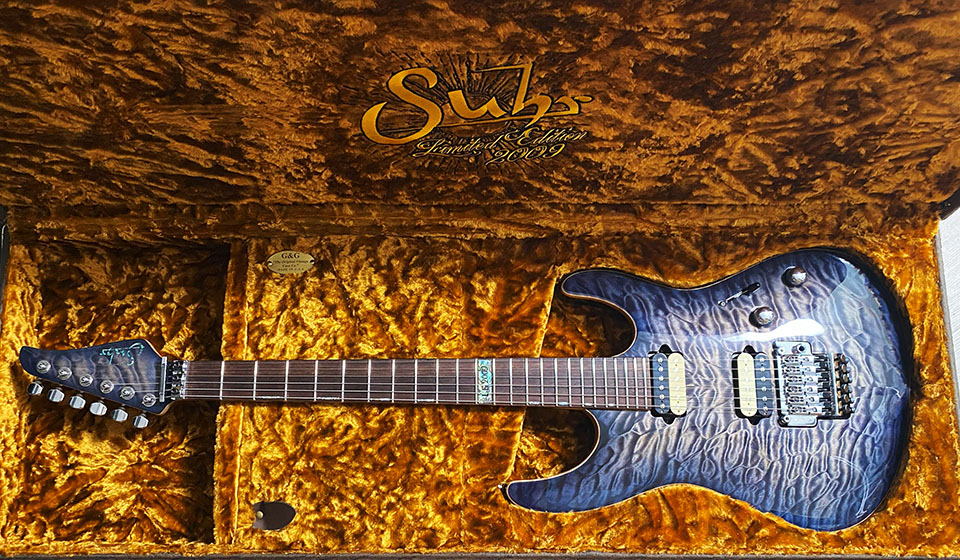 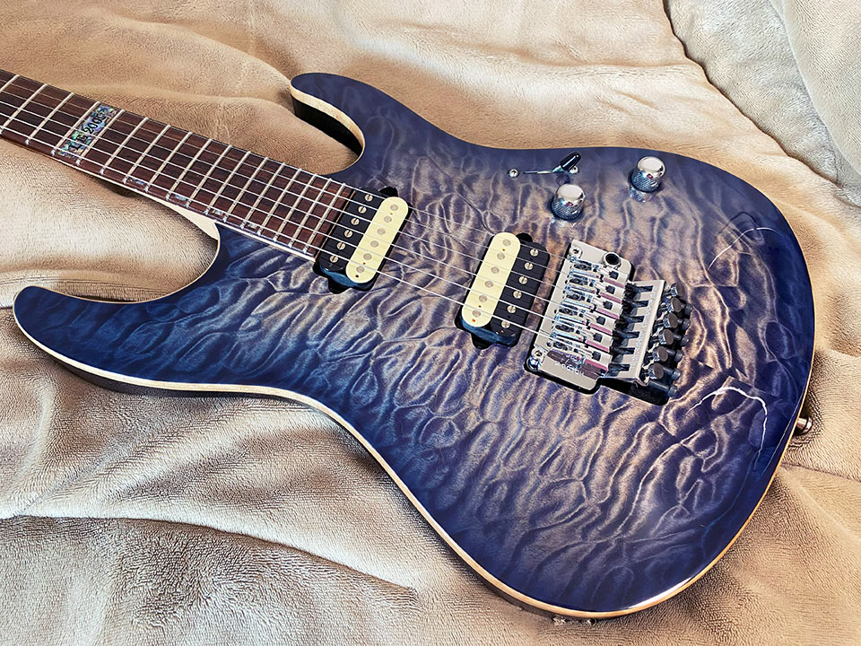 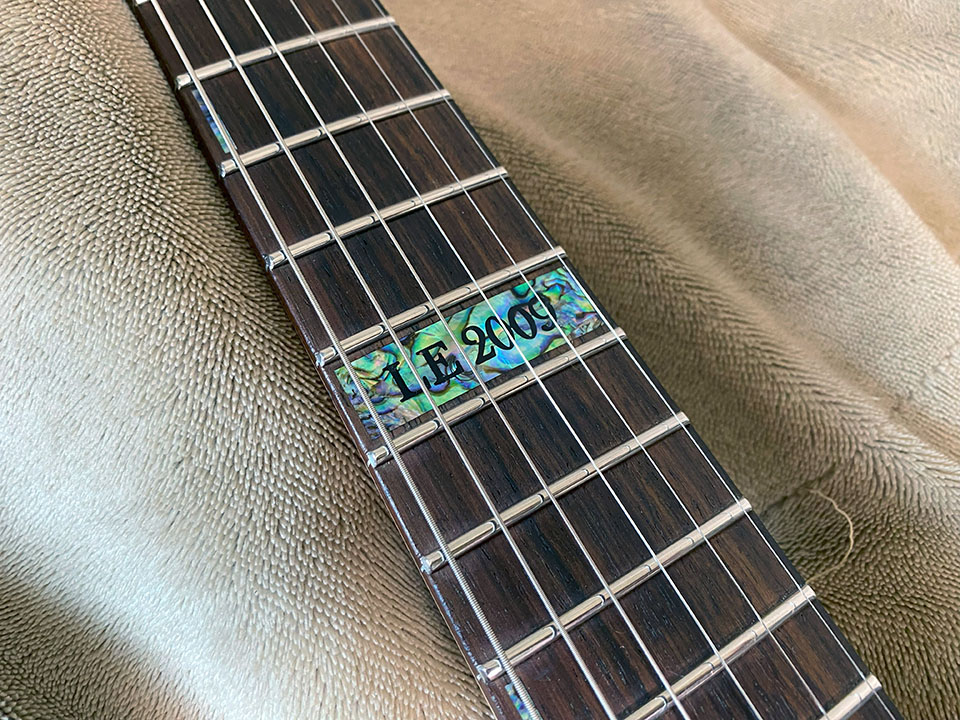 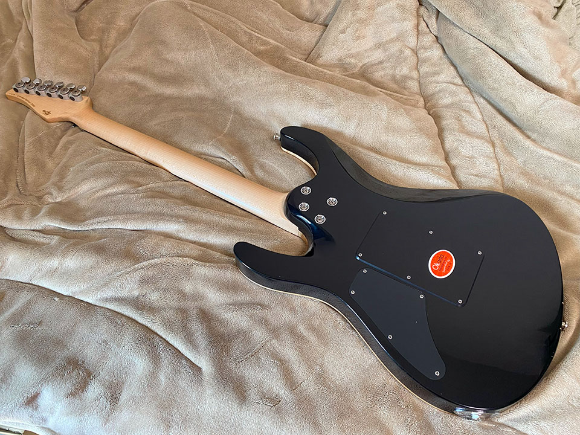 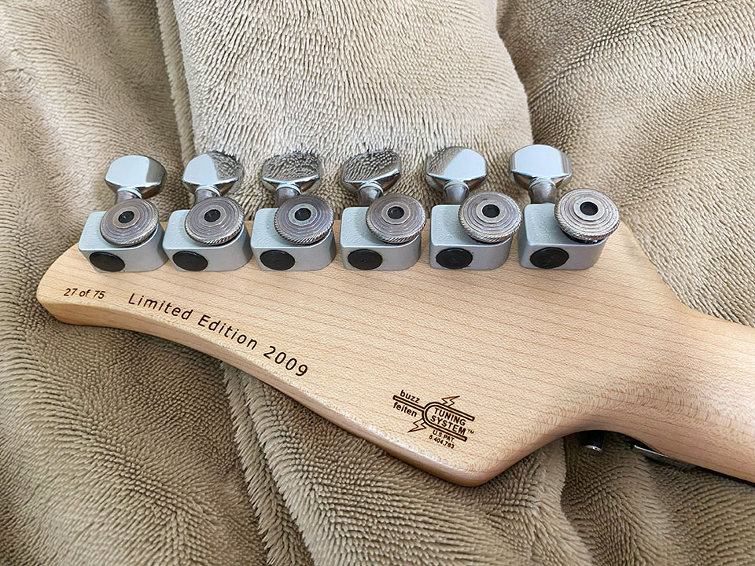 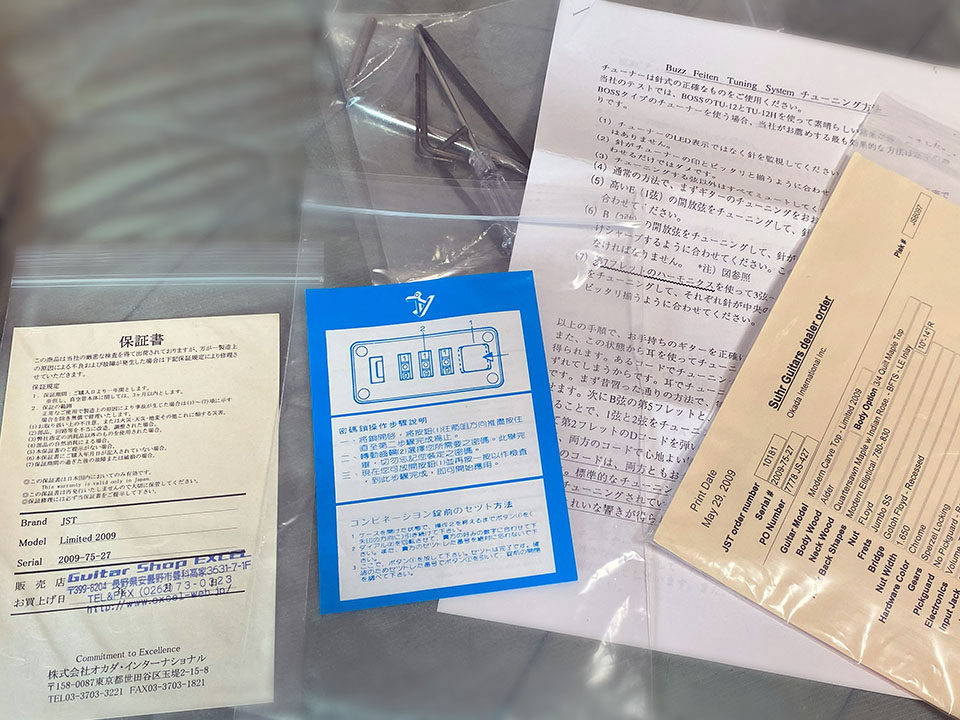 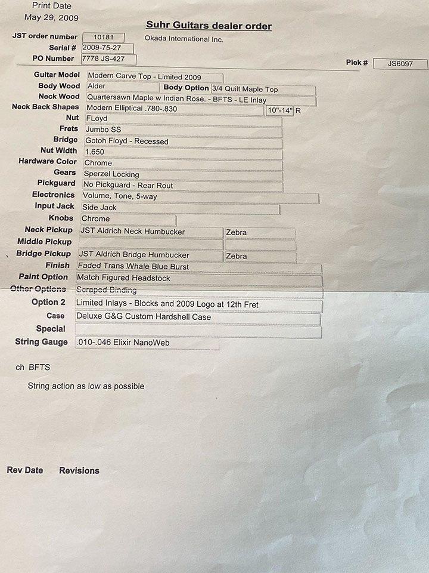 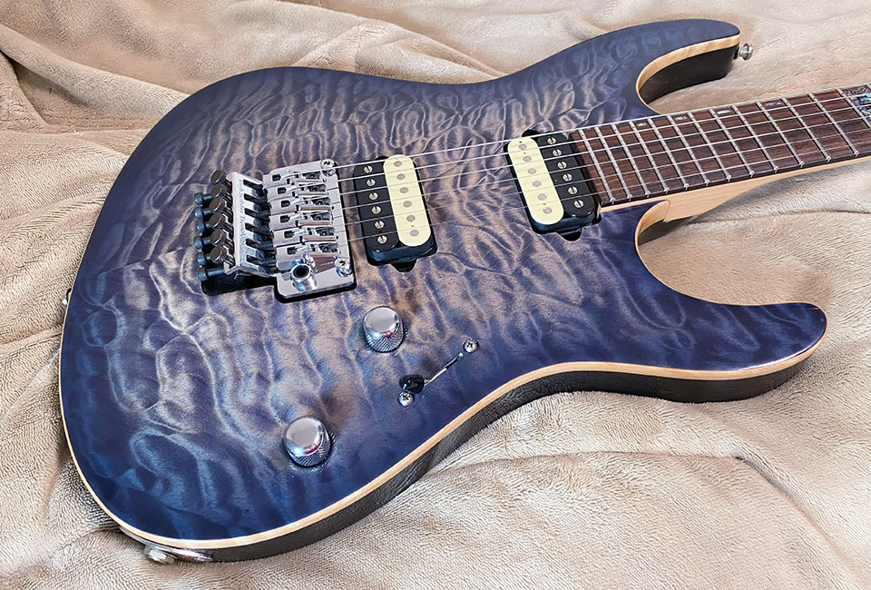 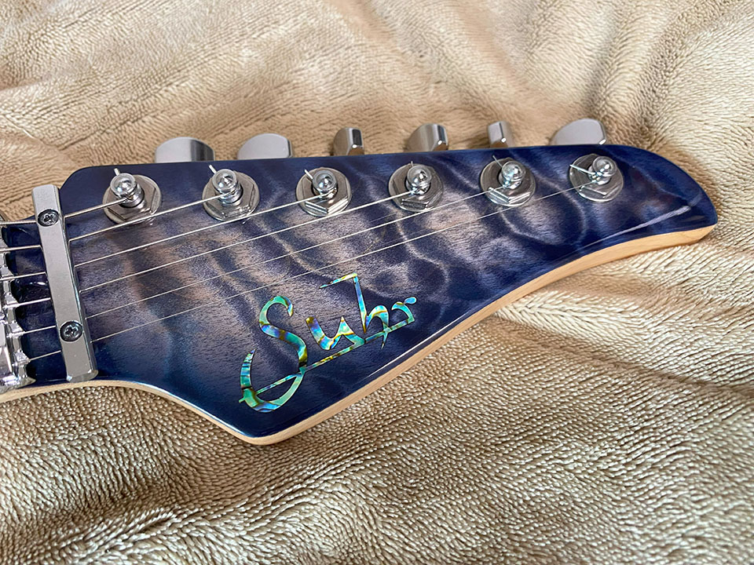
- 購入日 : 2025-08-31
- 購入価格 : ￥495,000
- カラー : Faded Trans Whale Blue Burst
- 指板 : ローズウッド・24F
Feodor Dosumov に憧れて、2014年に Ibanez RG770FM を購入したりしていた私。彼が使用しているギターは Suhr Modern Carve Top Limited Edition 2009 という世界75本限定生産のモデル。Faded Trans Whale Blue Burst と呼ばれる、キルトメイプルへの絶妙なカラーリングが目を引く一本だった。
そんな世界75本限定生産モデルの1本を、ついに手に入れることができた。デジマートで発見して、熟考の末 2025-08-31 にポチる。2025-09-03 に着弾。ヘッド裏に刻印されたシリアルは「27 of 75」となっている。
まずは圧巻のメイプルトップ。肉眼ではわずかに青紫に見えるのだが、光の当たり方だったり、カメラを通して見るとまた印象が大きく変わって面白い。フロイドローズ搭載機にしてはボディが軽い。3.31kg とのこと。ネックはわずかに順反り、トラスロッドは締める方向に回りきっています
とのことでネックの状態が心配だったが、今のところ問題なし。とても弾きやすい。
オープン・ゼブラタイプのハムバッカーは Suhr Aldrich ピックアップが載っている。ハイゲイン系のピックアップのようで、カタログ上の抵抗値もフロント 9.0KΩ、リア 17.5KΩ とハイパワーなのだが、Gibson CS レスポールに搭載されている Custombucker にも通ずるような、良い枯れ具合で分離感の良いサウンドだ。RG770FM に載っていた DiMarzio ToneZone (直流抵抗値 17.31KΩ) は「他のギターよりもボリュームが大きい」「そのままのセッティングで和音を弾くと音が潰れる」という感じが強かったのだが、ハイゲインピックアップだからといってそういった荒々しい出音ではなかった。セレクタースイッチでコイルスプリットした時のシングルコイルサウンドは歯切れが良く、雑に歪むような、ブーミーなサウンドでは決してない。とても上品で扱いやすい。
あとは本機には BFTS バズ・フェイトン・チューニング・システムという機構がインストールされている。「インストール」というと大仰な感じがするが、ナットの取付位置と、各弦のチューニング手順に特許がある仕組みだそうだ。普通の牛骨ナットなら、切れ込みの入れ方とかで各弦のゼロフレット位置を調整するのはまぁ分かるのだが、ナット側を六角レンチで締め上げるフロイドローズタイプの場合はどうなってるんだろう？実物を見てもイマイチ分からない。「ある弦を1セントだけシャープさせてチューニングする」といった専用のチューニング手順書も同封されていたが、めんどくさいので気にせず普通にチューニングしたｗ。特に問題はない。普通に弾ける。
専用ハードケースの他に、当時のオーダーシートなども同封されていた。日本代理店のオカダ・インターナショナルが仕様をオーダーした1本のようで、生産直後からずっと日本にあった1本だと思われる。
世界的にも有名なハイエンドブランドの限定モデルなだけあって、ケチをつけるようなポイントはない。弾き心地、サウンドともに、とても優等生な1本だと思う。購入金額だけ見ても高価なモノだし、限定生産モデルという希少価値もだし、そして当然ながらサウンドも素晴らしいので、Gibson CS レスポールとともに大事に扱っていきたい。
あまりにも好き過ぎる本機種なので、全75本の行方を追ってみようというページを作成 : Suhr Modern Carve Top Limited Edition 2009 アルバム
Squier 51 - Vintage Blonde 3本目


- 購入日 : 2025-09-15
- 購入価格 : ￥28,600
- カラー : Vintage Blonde
- 指板 : メイプル・21F
2012年頃にも持っていた Squier 51 Vintage Blonde (売却済) の、同一モデル・同一カラー。2025-09-15 ヤフオクで落札、2025-09-18 到着。Squier 51 - Black → 22F Vintage Natural Mod (売却済) も持っていたので、同一モデルとしては3本目となる。3本も同じモデルを買ったのは初めて。
ネット上で色んな個体を見ていると、Squier 51 の初期型は弦が裏通しではない「トップロード」方式だが、Squier 51 でも後期の再生産型、および Fender Japan PS-51 になると裏通しになるようである。つまりボディ裏面を見て弦を通す穴がなければ、Squier 51 の初期型と判断がつく。
シリアルナンバーが「IC051011145」と「05」で始まっているので、インドネシア製の2005年生産品。電装系の動作は問題ないが、ハイフレットに音づまりがあるので、22F ネックにでも換装したいなと思っている。
Fernandes FST Mod - 3TS


{kind=link}
{kind=link}
{kind=link}
{kind=link}
{kind=link}
{kind=link}
{kind=link}
{kind=link}
{kind=link}
{kind=link}
{kind=link}
{kind=link}
{kind=link}
{kind=link}
{kind=link}
{kind=link}
{kind=link}
{kind=link}
{kind=link}
{kind=link}
{kind=link}
{kind=link}
{kind=link}
{kind=link}
{kind=link}
{kind=link}
{kind=link}
{kind=link}
{kind=link}
{kind=link}
{kind=link}
{kind=link}
{kind=link}
{kind=link}
{kind=link}
{kind=link}
{kind=link}
{kind=link}
{kind=link}
{kind=link}
{kind=link}
{kind=link}
{kind=link}
{kind=link}
{kind=link}
{kind=link}
{kind=link}
- 購入日 : 2025-12-12
- 購入価格 : ￥20,500
- カラー : 3 Tone Sunburst
- 指板 : メイプル・22F
高中正義が使っているような3トーンサンバーストのストラトで、中央の黄色部分が綺麗で、赤の部分が太く目立つ配色のモノをずっと探していた。可能なら100本限定生産だった「Fender Custom Shop Takanaka Stratocaster」のような色味・スペックが欲しくて、現実的な価格帯だと Fender Japan ST58 あたりが入手性良いかなーなんて思っていたが、メーカーに拘らずジャパビンなども探していたところ、コチラに出会った。2025-12-12 ヤフオクで購入し、2025-12-14 到着。
コチラは Fernandes のボディに Mighty Mite のネックというニコイチの改造品である。ボディは「石ロゴ期」と呼ばれる1977～1981年頃のモノらしい。3トーンサンバーストの色味はかなり期待していたモノに近い。赤部分が太めで、外周の黒部分が細めな感じが良い。電装系もちょっと手が入っているっぽいが、とりあえず動作不良はなく良さげ。当時のフェルナンデスはトーカイか河合楽器が製造していたらしく、品質は十分。ボディ材としては「セン (栓)」と呼ばれる、アッシュに似た特性の木材らしい (日本で採れるからジャパニーズアッシュと呼ばれることもあるそうだが、アッシュとは科も異なる木材)。
一方、ネックは Mighty Mite 製。Fender からライセンス認証を受けているリプレイスメントネックとして有名なメーカーだが、世間的な評判だと品質は Warmoth に劣るとか？メイプル指板の 22F で、高中ストラトっぽさがある。GOTOH 製のクルーソンタイプのマグナムロックペグが載っていて、動作には問題なし。サテンフィニッシュで白っぽいので、もっとグロス塗装の飴色ネックにできたらいいなーと思っている。誰が入れたか知らないが、購入時から Fender ロゴデカールが貼られている。
2025-12-23、ミドルトーンノブでリアトーンも操作できるように配線を変更した。Dumont と書かれたデカいコンデンサが載っているのを確認。
- ← My Guitars 05 : 41～50本目
- → My Guitars 07 : 61～本目